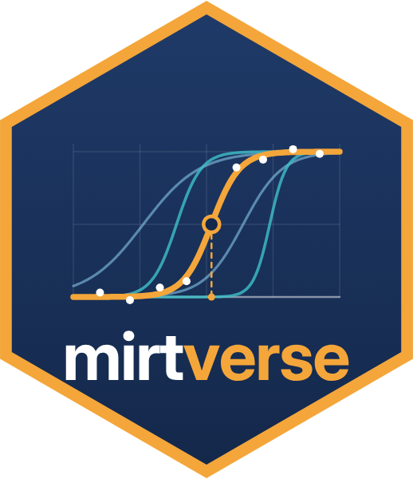

mirtverse sits on top of mirt. mirt estimates the models; mirtverse helps you choose a model, read the results, make figures and share them. Every function takes an ordinary mirt model, so you can mix the two packages freely.
install.packages("mirtverse", repos = c(
"https://okanbulut.r-universe.dev",
"https://cloud.r-project.org"))library(mirtverse) loads mirt too
data <- expand.table(LSAT7)
sel <- select_model(data)
mod <- sel$best # an ordinary mirt model
select_model(), dif() and fit_rt() results.tidy() also works on DIF, response-time, bank and pipeline objects.
d <- dif(data, group = gender, model = "2PL") tidy(d); interpret(d); gg_dif(d)
gg_trace(mod)item curves; type = "expected"
gg_info(mod)type = "test", "items", "se"
gg_wright(mod)persons and items on one scale
gg_itemfit(mod)item fit with a cutoff
gg_q3(mod, cutoff = 0.2)local dependence
gg_scores(mod)distribution of person scores
gg_empirical(mod, item)model curve vs. observed
gg_dif(d)type = "effect" or "curves"
"trace", "expected", "info",
"iteminfo", "se", "wright", "itemfit",
"q3", "scores".Common arguments: which.items picks items, theta_lim = c(-4, 4) sets the ability range.
sim <- sim_rt(N = 1500, J = 20, rapid = 0.08) mod <- mirt(sim$responses, 1, "2PL") fit <- fit_rt(mod, sim$rt)
"nt10", "nt15", "nt20".format = "shiny" for shinyapps.io or Posit Connect.mv_ask_setup("claude") # once
scr <- mv_ask("Fit a 2PL, check DIF by gender
and make a report", data = mydata)
run_script(scr)
save_script(scr, "analysis.R")
dry_run = TRUE shows what would be sent;
anonymize = TRUE hides column names. Works offline with a keyword parser.One object carries a test from blueprint to bank monitoring. Each stage does its work, then runs a
gate: checks that record flags for you to consider before the next stage. Every decision
is logged, and p$code keeps the R code for the whole run.
p <- mv_pipeline("Certification exam")
p <- add_responses(p, certexam, items = 3:34,
key = certexam_key, group = "language")
p <- calibrate(p, model = "2PL")
flags(p)
pipeline_report(p, "report.html")
status = "all" includes decided ones.strict = TRUE, open review and block flags stop the
next stage until a decision is recorded.mv_rules(q3 = 0.25, reliability = 0.85).
preset = "lenient" relaxes them for pilot studies.print(p) shows each stage's status; tidy(p) lists all flags as a data frame.
c(Ethics = 4, Law = 3).verify_items() checks keys;
add_items(p, items) brings your own.read_reviews(p, reviews) reads it back."stocking-lord", "haebara",
"mean-sigma", "mean-mean" or "fixed".
bank_items(p, name) stores them; mv_bank(mod) starts a bank from a model.p <- drop_items(p, "Q14", note = "Miskey")
p <- calibrate(p, model = "2PL")
p <- override(p, check = "dif_large",
note = "French version revised")
p <- bank_items(p, name = "Certification bank")
p <- set_cuts(p, cuts = 18, scale = "raw",
labels = c("Fail", "Pass"))
p <- score_persons(p)
The full walk-through is in the Assessment pipeline article on the website.
item_map(p, rp = 0.67) maps items to the scale for standard setting.score_open(p, responses)
scores open-ended answers with a rubric and an LLM or your own trained model.LLMretire_items(p, items, status, note) takes items out of use.These are suggested packages: install them only for the stages you use. Linking and cut-score methods are built in.
launch_workbench().